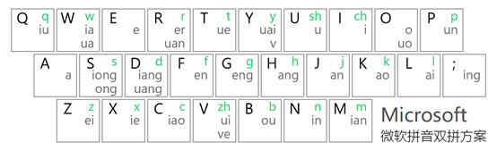
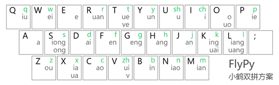
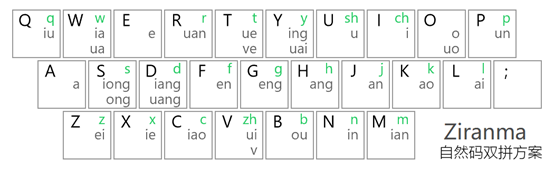
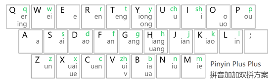
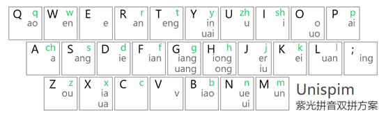
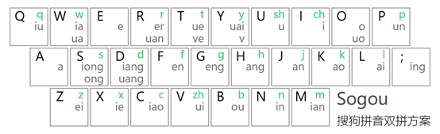
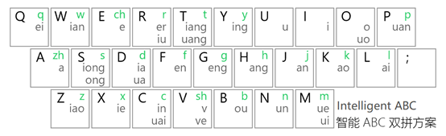

As some users need to enter a lot of text frequently for hobbies, work or life, they looked for a more efficient input method. ShuangPin input method was born.
Shuangpin(雙拼; 双拼) input method is a Chinese character input method that splits each phonetic syllable into initial consonant and final vowel, and combines them into a single key. Thus, the user can type a Chinese character by hitting only two keys that are possible.
The key of Shuangpin input method is divided into two parts, which are initial key and final key.
In the initial key, the initial consonant that is the same as the English letter is directly represented by the English letter, like the initial consonant "b" is represented by the letter B. If the initial consonant is different from the English letters, they are represented by English letters that do not have the same initial consonants. In the figure below, the initial consonants “zh, ch, sh” in green are replaced by the corresponding English letters V, I, U.
In the final key, different English letters are used to represent different final vowels. In the figure below, the final vowels "iu, ia" in gray are represented by the corresponding English letters Q and W.
There are seven common key schemes for Shuangpin input method. In most Shuangpin layout schemes, such as FlyPy, Microsoft, and Ziranma, final vowels with the highest frequency are placed in the middle layer to reduce the risk of repeated strain.
     Take Microsoft Shuangpin for example, to type in "中（Pinyin: zhong）”, simply press the "V" key (representing the initial consonant "zh") and then press the "S" key (representing the final vowel "ong"); to type in “文 (Pinyin: wen)”, simply press the "W" key (representing the initial consonant "w") and then press the "F" key (representing the final vowel "en"). So input "中文", we only need to input "VSWF" in Shuangpin, not the full pinyin of "ZHONGWEN".
We can find that many keys correspond to more than one final vowel. For example, the “W” key corresponds to the final vowels “ia” and “ua”, and the “S” key corresponds to the final vowels “iong” and “ong”. But when these final vowels are used, there is no ambiguity. Because these final vowels represented by the same key do not form a Chinese character with the same initial consonant. For example, there is “花”（Pinyin: hua）, but there is no Chinese character for “hia” in pinyin. Another example is "兄" (Pinyin: xiong), but there is no “xong”.
Let's try!